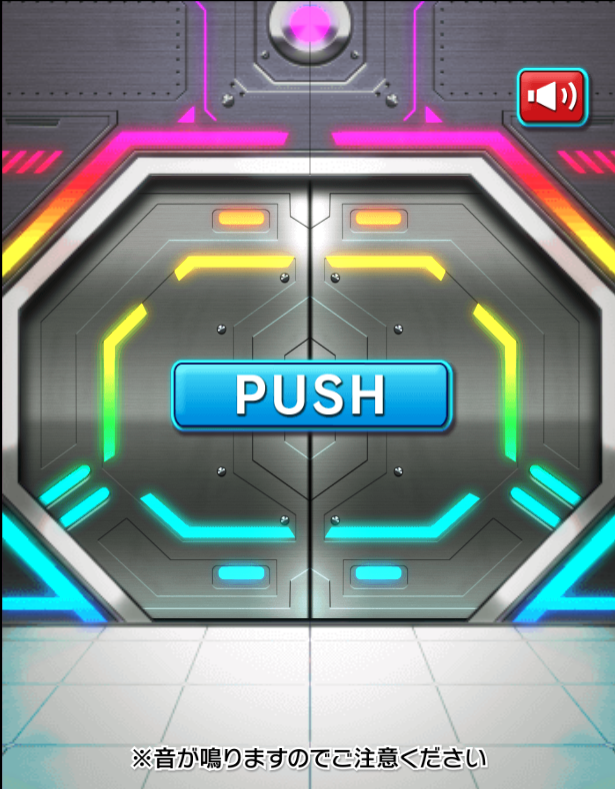
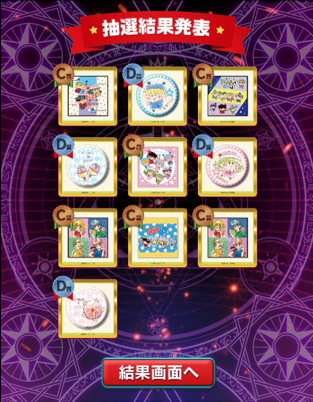
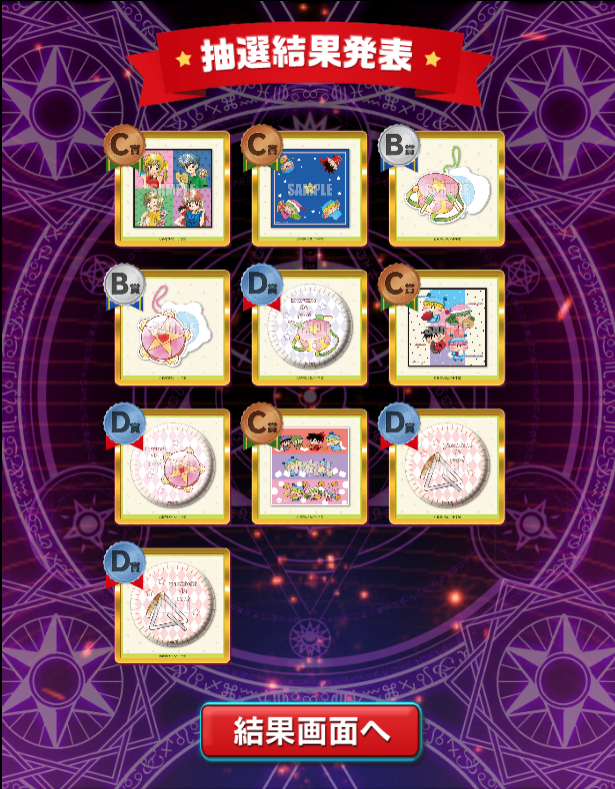
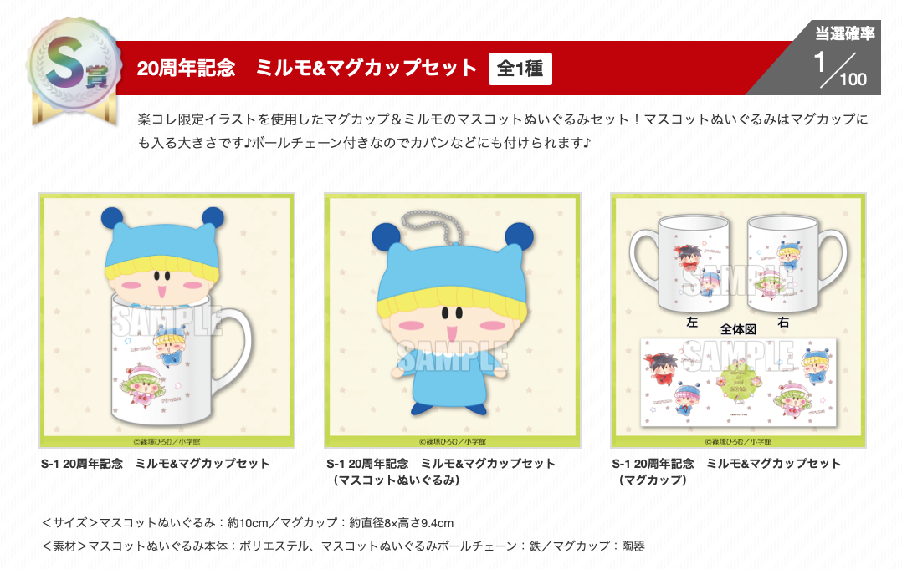
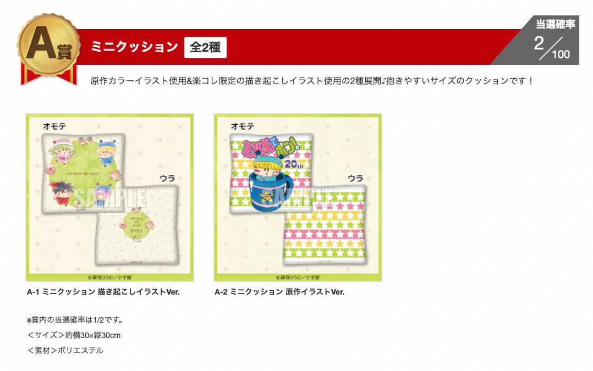
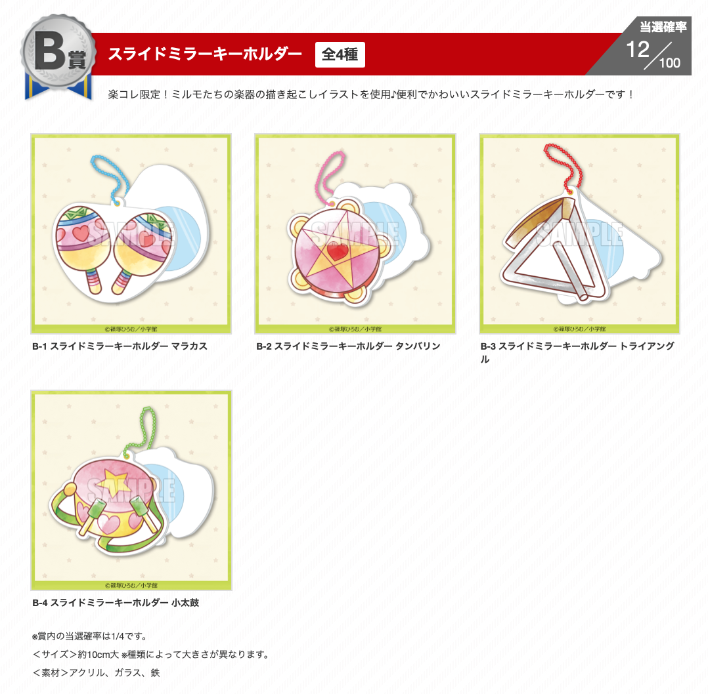
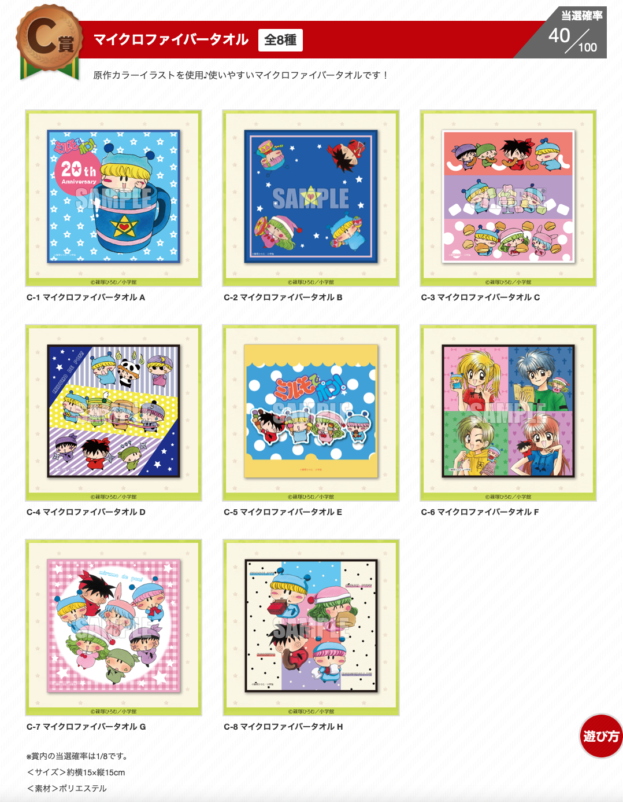
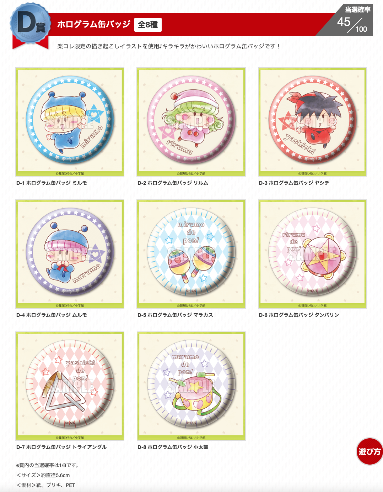

先日案内しました楽天コレクションのミルモ20周年グッズのレポートです！（このところ多忙だったため、かなり遅れての報告となりごめんなさいm(_ _)m
はじめに、楽天コレクションの概要は以下の通りです。
- ネット上でのみの販売
- １回715円のくじを引くと、S賞〜D賞のどれかが当たる
- 当選商品をメダルに交換可能（1メダル=1円相当）
- ミルモは8月5日〜8月26日までの期間限定販売
- ミルモ以外にもいろんな商品が販売されている
私も8月5日の夜22時頃に、20回挑戦しました（10連×2回）。果たしてその結果は・・・

くじを始めると表示される画面です。何が出るかな・・？

10連の1回目。C賞とD賞しかない・・

10連の2回目。辛うじてB賞が２つ当たりました。
ぐはぁ、くじ運悪過ぎ・・(T-T)。S賞どころかA賞もゲットできませんでした。噂によると10連の３回目あたりから当たる確率が上がるとか上がらないとか・・。皆さんはどんな結果でしたでしょうか？（私はサスケ＆ハンゾーが描かれたC賞のマイクロファイバータオルがなんとか当たったからよしと自分に言い聞かせています）
ちなみにS賞が当たった場合、以下のように派手な演出があったようです。う〜ん、すごい！
3回目のミルモガチャですwwwくじでなくてガチャと呼んでるww
— 雛乃うた🍓BOOTH通販中✨ (@hinanouta) August 5, 2021
1回目と2回目とちょっと違かったから出る前から期待した！！！最後光ってたからすごく期待した✨✨やったねd(≧▽≦*d)#ミルモでポン #楽コレ #楽天コレクション pic.twitter.com/fNWRQI3yJI
ここからは、記録のため、今回のミルモグッズを楽天コレクションのサイトより引用します。
超レアなS賞。マスコットぬいぐるみの形状や質感がすごく気になるので、当選された方は教えてくださるとうれしいです〜
A賞のミニクッション。縦横30cmは割と存在感あるサイズな気がしますね。
B賞のスライドミラーキーホルダー。表は楽器のイラストになっていて、スライドすると鏡が現れるのかな？
C賞はサブキャラも登場していてにぎやかですね。ミルモフレンズでマンボがいないのはお約束！？
C、D賞はそれぞれ８種類あり、コレクター泣かせかも！？
 ラッキー賞はS賞と同じ当選確率1%ですが、果たして当たった人はいるのだろーか！？
ラッキー賞はS賞と同じ当選確率1%ですが、果たして当たった人はいるのだろーか！？
レポートは以上になります。10年以上ぶりのぬいぐるみ販売で盛り上がりましたが、他の妖精のぬいぐるみも含めた第２弾に期待したいですね。個人的にはくじ方式ではなく、商品を選んで購入できる方式にしてほしいところですが(^◇^;)
(2021/9/2)